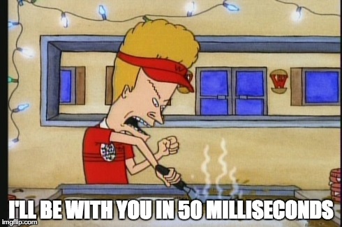

<h2>Blocking I/O analogy (2)</h2>

<ul style="text-align: left; float:left; width:47%;  margin-left: 5%">
    <li> The cashier waits for your food to be cooked before doing anything else (he’s blocked)</li>
    <li> The cashier is not able to help the next person until you got your food and went your way
</ul>


